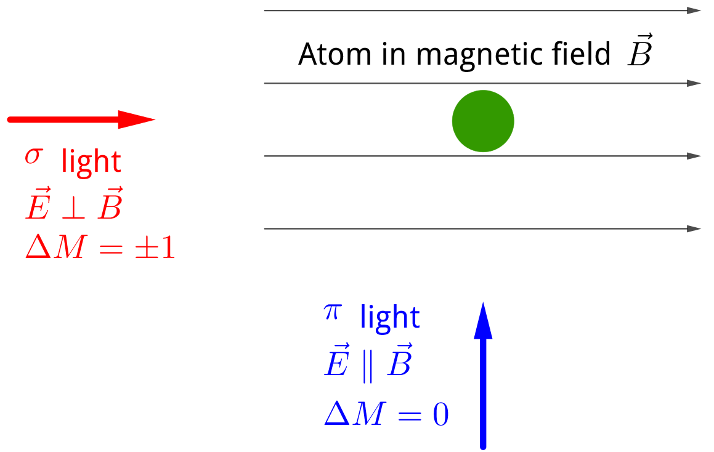

Information
Wigner–Eckart theorem
Every operator can be written as the sum of spherical tensors.
Ref Sakurai Eq.(3.11.31)
$$\begin{align} \langle n J M |T_{l, m} | n' J' M'\rangle = \frac{\langle n J || T_l || n' J'\rangle}{\sqrt{2J + 1}} \langle J' l ; M' m |J M\rangle \end{align}$$where $T_{l, m}$ is spherical tensor of rank $l$ (transforms under rotations like the spherical harmonics $Y_{l, m}$ ). $\langle J' l ; M' m |J M\rangle$ Clebsch–Gordan coefficients . $\langle n J || T_l || n' J'\rangle$ is the reduced matrix element.
$M = M' + m$ and Triangular rule
$$\begin{align} |J' - J| \le l \le |J' + J| \end{align}$$Example: E1, M1, $\langle a| \vec{r} | b\rangle$ , $\langle a| \vec{L} | b\rangle$ vectors is $Y_{1, m}$ . Dipole section rules \begin{align} |\Delta J| =& 0, 1 \\ \Delta m =& 0, \pm 1 \end{align}
Example: E2(quadrapole), $xz$ , $Y_{2, m}$ , selection rules for quadrapole transition \begin{align} |\Delta J| =& 0, 1, 2 \\ \Delta m =& 0, \pm 1, \pm 2 \end{align}
Example: How (E1) section rules depend on the polarization of light
$$\begin{align} \hat{\epsilon} \langle b | \vec{r} |a\rangle \end{align}$$For example circular polarization
$$\begin{align} \hat{\epsilon} = \frac{\hat{x} \pm \mathrm{i} \hat{y}}{\sqrt{2}} \end{align}$$and decompose $\vec{r}$ as
$$\begin{align} \vec{r} =& r \left(\sharp Y_{1, -1} + \sharp Y_{1, 1} + \sharp Y_{1, 0} \right) \\ = & r \left(\sharp \frac{\hat{x} + \mathrm{i} \hat{y}}{\sqrt{2}} + \sharp \frac{\hat{x} - \mathrm{i} \hat{y}}{\sqrt{2}} + \sharp \hat{z} \right) \end{align}$$so, circular $\hat{\epsilon}$ will project out $T_{1, \pm 1}$ , for example,
$$\begin{align} \frac{(\hat{x} + \mathrm{i}\hat{y})}{\sqrt{2}} \cdot \frac{(\hat{x} + \mathrm{i}\hat{y})}{\sqrt{2}} =& 0 \\ \frac{(\hat{x} + \mathrm{i}\hat{y})}{\sqrt{2}} \cdot \frac{(\hat{x} - \mathrm{i}\hat{y})}{\sqrt{2}} =& 1 \\ \frac{(\hat{x} + \mathrm{i}\hat{y})}{\sqrt{2}} \cdot \hat{z} =& 0 , \end{align}$$that is $\Delta m = \pm 1$ . Linear polarization can be decomposed as the linear superposition of $\sigma_+$ , $\sigma_-$ .
$\sigma$ light and $\pi$ light

Atom-light Interaction
Two important cases when an atom interacts with monochromatic wave, or when it interacts with a broad spectrum.
An atom in a low temperature ( $k_BT \ll \hbar\omega_{eg}$ , $2 \mathrm{eV}\sim 20, 000 \mathrm{K}$ , $k_B T_{\mathrm{room\, temperature}} \sim 25 \mathrm{meV}$ ) vacuum, means that the atom will irreversibly decay to the ground state with a life time $\tau$ . That means in some picture, the excited state is broadening by nature lifetime
$$\begin{align} \Gamma = \frac{1}{\tau} \end{align}$$Now: add light with a bandwidth $\Delta \omega$
- $\Delta \omega \ll \Gamma$ , narrow band excitation, $\Delta \omega \to 0$
- $\Delta \omega \gg \Gamma$ , broad band radiation
Broadband
Spectral density
$$\begin{align} S(\omega) = \frac{[\mathrm{energy}]} {[\mathrm{volumn}][\mathrm{frequency}\, \mathrm{intervel}]} \end{align}$$or intensity per unit frequency intervel
$$\begin{align} I(\omega) = \underbrace{c}_{\mathrm{speed\,of\,light}} S(\omega) = \frac{[\mathrm{energy}]}{[\mathrm{aera}][\mathrm{time}] [\mathrm{frequency}\, \mathrm{intervel}]} \end{align}$$Monochromatic radiation
$\omega$ , $\mathcal{E}$ (electric field amplitude) or intensity $I$ .
Look at $t\ll \Gamma^{-1}$
A two level system, driven by a laser system, will behave identically to a spin driven by a magnetic field.
Strong driving field, Rabi flopping
Rabi oscillations between two electronic states covered by a laser beam.
We have only limited time window before spontaneous emission. We have to disscuss the physics in this short time window. And if we want to excite an atom and see Rabi oscillation in a short time, you better have a strong laser beam.
$|g\rangle, |e\rangle, V_{eg} e^{-\mathrm{i}\omega t}$ , perturbation:
$$\begin{align} a_e(t) =& \frac{1}{\mathrm{i}\hbar} \int_0^t V_{eg} e^{-\mathrm{i}(\omega - \omega_{eg})t'} \mathrm{d} t' \\ =& \frac{V_{eg}}{\hbar} \left[ \frac{e^{-\mathrm{i}(\omega - \omega_{eg})t} - 1}{\omega - \omega_{eg}}, \right] \end{align}$$ $$\begin{align} P_e = |a_e|^2 = \frac{|V_{eg}|^2}{\hbar^2} \frac{\sin^2 \left( \frac{\omega - \omega_{eg}}{2}t \right)}{[(\omega - \omega_{eg})/2]^2}. \end{align}$$For short times:
$$\begin{align} \label{eq:15} P_e = \frac{|V_{eg}|^2}{\hbar^2}t^2 \propto t^2 , \end{align}$$the proportionality to $t^2$ means it's a fully coherent process.
For longer times:
Rabi oscillations, have deriving perturbatively (i.e. $|a_e|^2 \ll 1$ , off resoance case).
Let's do it now exactly
$$\begin{align} H_{eg} = \langle e | H | g\rangle = \underbrace{-\vec{d} \cdot \vec{E}_0}_{\hbar \omega_R} \cos(\omega t) \end{align}$$to compare with spin 1/2, shift the ground state to $-\frac{1}{2}\hbar \omega_{eg}$
$$\begin{align} H =& \frac{1}{2}\hbar \omega_{eg} \left(\underbrace{|e\rangle\langle e| - |g\rangle\langle g|}_{\sigma_z} \right) + \hbar\omega_R \left(\underbrace{|g\rangle\langle e| + |e\rangle\langle g|}_{\sigma_x} \right)\cos (\omega t) \\ =& \frac{1}{2}\hbar \omega_{eg} \sigma_z + \hbar \omega_R \cos (\omega t) \sigma_x \end{align}$$$H$ corresponds to spin 1/2 in a static $z$ -field and linearly polarization oscillating field along $x$ .
Rotating magnetic field
$$\begin{align} H = \frac{1}{2}\hbar\omega_{eg} \sigma_z +& \underbrace{\frac{1}{2}\hbar\omega_R [\sigma_x \cos(\omega t) + \sigma_y \sin(\omega t)]} _{\mathrm{co-rotating}} \\ +&\underbrace{\frac{1}{2}\hbar\omega_R [(\sigma_x \cos(\omega t) - \sigma_y \sin(\omega t)]} _{\mathrm{counter-rotating}} \end{align}$$We solve the problem exactly by going into a frame which rotated at the Larmor frequency, $\omega_{eg}$ . The co-rotating term became stationary on resoance in this rotating frame, whereas the counter-rotating term rotates at a very high frequency in this frame at $\omega_{eg} + \omega$ in the Larmor frequency. So, if this frequency $|\omega - \omega_{eg}| \ll \omega_{eg}$ and $\omega_R \ll \omega_{eg}$ , we can neglect the last term, RWA.
Our results for spin 1/2, if $P_e(t = 0) = 0$ ,
$$\begin{align} P(t) = \frac{\omega_R^2}{\Omega^2} \sin^2 \left( \frac{1}{2}\Omega_{R} t \right) \end{align}$$where generalized Rabi frequency $\Omega_R = \sqrt{\omega_R^2 + \Delta^2}$ , detuning $\Delta = \omega - \omega_{eg}$ .
Broadband excitation
Perturbative result,
$$\begin{align} |a_e(t)|^2 = \left( \frac{\omega_R}{2} \right)^2 \frac{\sin^2(\frac{\Delta}{2}t)}{(\Delta/2)^2}, \end{align}$$and now we want to integrate over that because we have a broadband distribution of light. Energy density $W(\omega)$ ,
$$\begin{align} \frac{1}{2}\epsilon_0 E_0^2 = \int \mathrm{d}\omega \cdot W(\omega) \end{align}$$linearly polarized light in the x direction
$$\begin{align} \omega_R^2 = \frac{1}{\hbar^2}(d_x E_0)^2 \end{align}$$ $$\begin{align} P_e(t) = \frac{d_x^2 E_0^2}{4 \hbar^2} \frac{\sin^2(\frac{\Delta}{2}t)}{(\Delta/2)^2} = \frac{d_x^2}{2\epsilon_0\hbar^2}\int \mathrm{d}\Delta \cdot W(\omega + \Delta) \frac{\sin^2(\frac{\Delta}{2}t)}{(\Delta/2)^2} \end{align}$$Reference
- Wikipedia: Wigner–Eckart theorem
- Jun John Sakurai, Jim Napolitano, Modern Quantum Mechanics. (Cambridge University Press, 2017)
- Wikipedia: Clebsch–Gordan coefficients
- Wikipedia: Spherical harmonics
- Wikipedia: Table of spherical harmonics
- https://quantummechanics.ucsd.edu/ph130a/130_notes/node422.html
- Physics StackExchange: $\pi$ , $\sigma$ - atomic transitions with respect to the magnetic field axis
- Wikipedia: Polarization (waves) (defination of $\pi$ , $\sigma$ light)